Um einen Beleg zu erfassen oder aufzurufen muss im Register "Kopf" zuerst gewählt werden, welche Belegstufe bearbeitet werden soll. Anschließend wird die Kunden- oder Lieferantennummer eingegeben bzw. über den Matchcode gesucht. Die Laufnummer wird vom Programm im Anschluss automatisch vergeben. Hierbei handelt es sich um eine fortlaufende Nummerierung pro Kunde / Lieferant, welche jederzeit editiert werden kann.
Hinweis
Weitere Informationen bezüglich des Editierens bzw. Umwandelns von Belegen sind den folgenden Kapiteln zu entnehmen:
ü Editieren von bestehenden Belegen
ü Umwandeln von bestehenden Belegen
Weitere Informationen bezüglich des Erfassens von Belegen und den Buttons des Programms "Belegerfassen" sind dem Kapitel Belegerfassen zu entnehmen.
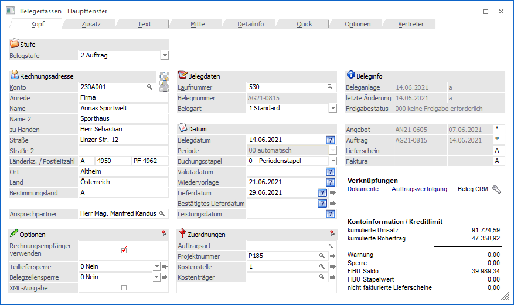
Folgende Eingabefelder, Einstellungen und Information stehen zur Verfügung:
Stufe
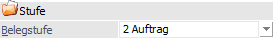
Ø Belegstufe
An dieser Stelle kann die Belegstufe für den Beleg gewählt werden. Folgende Möglichkeiten stehen zur Verfügung:
ü 1 - Angebot
Es wird ein Angebot
(Verkauf) erstellt. Ein gerechnetes bzw. gedrucktes Angebot hat keine weitere
interne Auswirkung.
ü 2 - Auftrag
Es wird ein Auftrag
(Verkauf) erstellt. Durch das Rechnen bzw. Drucken des Auftrags wird die
Artikeldisposition (d.h. die Bedarfsvorschau der Artikel) erzeugt.
ü 3 - Lieferschein
Es wird ein
Ausgangslieferschein (Verkauf) erstellt. Durch das Rechnen bzw. Drucken des
Lieferscheins wird die Artikeldisposition (d.h. die Bedarfsvorschau der Artikel)
aktualisiert und der Lagerabgang gebucht.
ü 4 - Faktura
Es wird eine
Ausgangsrechnung (Verkauf) erstellt. Durch das Rechnen bzw. Drucken der Faktura
werden die Daten für die Provisionsabrechnung, die Verkaufsstatistik, die
Kunden- / Artikelinfo und die WinLine FIBU/ WinLine KORE aufbereitet bzw.
bereitgestellt.
ü 5 - L.Anfrage
Es wird ein
Lieferantenanfrage (Einkauf) erstellt. Eine gerechnete bzw. gedruckte L.Anfrage
hat keine weitere interne Auswirkung.
ü 6 - L.Bestellung
Es wird ein
Lieferantenbestellung (Einkauf) erstellt. Durch das Rechnen bzw. Drucken der
L.Bestellung wird die Artikeldisposition (d.h. die Bedarfsvorschau der Artikel)
erzeugt.
ü 7 - L.Lieferschein
Es wird ein
Eingangslieferschein (Einkauf) erstellt. Durch das Rechnen bzw. Drucken des
L.Lieferscheins wird die Artikeldisposition (d.h. die Bedarfsvorschau der
Artikel) aktualisiert, der Lagerzugang gebucht und die aktuellen Einstandspreise
gebildet.
ü 8 - L.Faktura
Es wird eine
Eingangsrechnung (Einkauf) erstellt. Durch das Rechnen bzw. Drucken der
L.Faktura werden die Daten für die Einkaufsstatistik, die Lieferanten- /
Artikelinfo und die WinLine FIBU/ WinLine KORE aufbereitet bzw.
bereitgestellt.
Hinweis
Wird eine Stufe übersprungen, so werden die Werte automatisch bei der nächsten bearbeiteten Belegstufe aktualisiert.
Rechnungsadresse / Lieferadresse
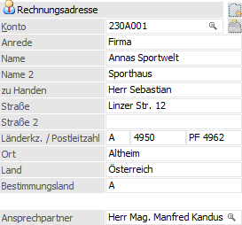
Ø Neues Konto anlegen
Durch Anwahl des Buttons "Neues Konto anlegen" kann ein neues Personenkonto angelegt und direkt in die Belegerfassung übertragen werden.
Hinweis
Der Button steht nur zur Verfügung, wenn die Option "Kontenneuanlage im Belegerfassen erlauben" in den FAKT-Parametern (Belege - Erweiterte Optionen) aktiviert wurde.
Ø Konto (Kunden- / Lieferantennummer)
An dieser Stelle kann die Kontonummer des Personenkontos / Interessenten, für welches der Beleg erstellt werden soll, hinterlegt werden. Anhand dieses Kontos werden eine Reihe von Vorbelegungen getätigt (u.a. die Adressdaten), wobei eine nachfolgende Überarbeitung möglich ist. Folgende Kontentypen werden unterstützt:
ü Interessent (nur Belegstufe "1 - Angebot")
ü Debitor / Kunde (Belegstufen "1 - Angebot" bis "4 - Faktura")
ü Anfragelieferant (nur Belegstufe "5 - L.Anfrage")
ü Kreditor / Lieferant (Belegstufen "5 - L.Anfrage" bis "8 - L.Faktura")
Achtung
Mit dem Aufruf der Kontonummer werden einige Vorbesetzungen durchgeführt. Dabei hängt es von den FAKT-Parameter (Belege - Allgemein - Option "Hauptkonto für Belege") ab, welche Datenbereiche von welchem Konto (Rechnungsadresse oder Lieferadresse) geladen werden. Anhand dieser Einstellung wird auch definiert, ob zuerst die Rechnungsadresse oder die Lieferadresse eingegeben werden soll. Die folgende Auflistung stellt die Standardvorbelegung da, kann aber mit Hilfe von "Kontenvorlagen" (in der Belegart zu hinterlegen) übersteuert werden:
ü Hauptkonto
ü Summenrabatt
ü Belegart
ü Preisliste
ü Teilliefersperre
ü Priorität
ü Kostenträger für Maskierung aus der Belegart im Belegkopf
ü Steuerleiste für UstCode
ü Kundengruppe
ü Rabattleisten
ü Bestprice-Kennzeichen für Preisfindung
Hinweis
Das Hauptkonto wird auch für die Dispositionstabelle (Rückstandsliste) und für die Kundenumsatzliste verwendet. Eine eventuelle Buchung für die Finanzbuchhaltung wird für die Rechnungsadresse erstellt.
ü Lieferadresse
ü Vorbelegung für Auspr.1 und Auspr.2
ü Tour und Gebiet
ü Rechnungsadresse
ü Kreditlimitprüfung (Warn-/Sperrtexte, Warn-/Sperrbeträge)
ü OP-Kennzeichen
ü Lieferadresse (wenn Rechnungsempfänger-Automatik aktiviert ist)
ü Vertreter
ü Belegkopftexte
ü Belegart
ü Zahlungskondition (Quelle in Belegart definierbar)
Hinweis - Laufkunden
Laufkunden sind Einmalkunden, für welche trotzdem eine Rechnung ausgestellt werden sollen. Damit Laufkunden verwaltet werden können, muss im Personenkontenstamm ein Konto mit der Option "div. Personenkonto" angelegt werden.
Wird dieses Konto aufgerufen, wechselt die WinLine automatisch in das Adressfeld, in welchem die Daten erfasst werden kann. Die Adresse wird dabei nicht in den Personenkontenstamm zurückgeschrieben, sondern nur innerhalb des Belegs gespeichert. Dadurch ist es möglich, ein Konto für viele Laufkunden zu verwenden.
Ø Adressdaten aktualisieren
Durch Drücken dieses Buttons (und entsprechender Bestätigung der Sicherheitsabfrage) können die Adressdaten des angegebenen "Kontos" in den Stammdatensatz (Personenkonten- bzw. Interessentenstamm) übergeben werden. Hierbei werden in dem Stammdatensatz folgende Werte aktualisiert:
ü Anrede
ü zu Handen
ü Straße
ü Straße 2
ü Landeskennzeichen
ü PLZ
ü PLZ2
ü Ort
ü Land
Hinweis
Der Button steht nur zur Verfügung, wenn die Option "Adresse im Belegerfassen aktualisieren" in den FAKT-Parametern (Belege - Erweiterte Optionen) aktiviert wurde.
Des Weiteren ist die Funktion im individuellen Belegerfassen (Belegerfassung unter Verwendung einer Vorlage) dann aktiv, sobald Konto-, und Laufnummer eingegeben sind.
Ø Versandland / Bestimmungsland
In diesem Feld muss das Länderkennzeichen für das Versandland (Einkauf) bzw. Bestimmungsland (Verkauf), welches für die Intrastatmeldung ausschlaggebend ist, hinterlegt werden.
Das Feld wird bei Verkaufsbelegen mit dem Länderkennzeichen der Lieferadresse und bei Einkaufsbelegen mit dem Länderkennzeichen der Rechnungsadresse automatisch gefüllt, kann jedoch manuell editiert werden.
Hinweis
In der Intrastatmeldung wird der Wert dieses Feldes geprüft, d.h. es werden nur jene Belege angezeigt, bei denen in diesem Feld ein "EU-Staat" eingetragen ist.
Ø Ansprechpartner
An dieser Stelle kann der Ansprechpartner des Kontos für den Beleg hinterlegt werden. Automatisch wird derjenige Ansprechpartner vorgeschlagen, welcher im Personenkontenstamm des gewählten Kontos das Kennzeichen "Standard" hinterlegt hat. Ist dieses Kennzeichen bei keinem Ansprechpartner gesetzt, so wird in dem Feld der Eintrag "Keine" vorbelegt.
Optionen
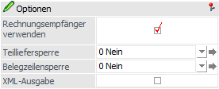
Ø Rechnungsempfänger verwenden
Durch Aktivierung dieser Option wird bei einem neuen Beleg automatisch der abweichende Rechnungsempfänger, welcher beim Kundenkonto hinterlegt ist (Personenkontenstamm - Register "FAKT" - Feld "Rechnungsempfänger"), als Rechnungsempfänger im Beleg gesetzt und das zuvor eingetragene Konto als Lieferadresse.
Beispiel
In dem Personenkonto "230A001-L1" wurde der Rechnungsempfänger "230A001" hinterlegt. Wird nun als Rechnungsempfänger "230A001-L1" eingetragen und dieses bestätigt (Option "Rechnungsempfänger verwenden" ist aktiviert,), so wird als Rechnungsempfänger "230A001" gesetzt und das Konto "230A001-L1" ist (nur noch) die Lieferadresse.
Ø Teilliefersperre
Mit Hilfe dieser Einstellung kann definiert werden, ob grundsätzlich Teillieferungen erlaubt sind oder nicht. Die Auswahl dient dabei als…
ü Vorbesetzung der Option "Teilliefersperre" für neue Belegzeilen (Register "Mitte").
ü Steuerungselement für den Belegdruck und das Programm "Kundenbestellungen bearbeiten".
Folgende Einstellungen stehen zur Verfügung:
ü 0 - Nein
Es sind Teillieferung
erlaubt und bei neuen Belegzeilen wird die Option "Teilliefersperre" nicht
aktiviert. Durch Anwahl des Buttons wird die Teilliefersperre aus allen
Belegzeilen entfernt.
Hinweis
Wenn Belegzeilen mit aktivierte Teilliefersperre existieren, so wird die Einstellung im Register "Kopf" während des Belegdrucks automatisch von "0 - Nein" auf "2 - auf Zeilenebene" gesetzt.
ü 1 - auf
Belegebene
Grundsätzlich kann ein Lieferschein (Verkauf bzw. Einkauf) nur
dann erstellt werden, wenn alle Belegzeilen mit der vollen Menge (gemäß Auftrag
bzw. Bestellung) geliefert werden. Die Option "Teilliefersperre" wird bei neuen
Belegzeilen automatisch aktiviert, wobei durch Anwahl des Buttons die Teilliefersperre auch in bestehenden
Belegzeilen gesetzt werden kann.
Hinweis - Belegdruck
Die Option "Teilliefersperre" des Registers "Mitte" wird in diesem Zusammenhang bei der Prüfung des Belegdrucks verwendet, d.h. sobald eine Erfassungszeile entsprechend aktiviert ist und nicht komplett geliefert wird, so wird der Belegdruck nicht durchgeführt.
Hinweis - Kundenbestellungen bearbeiten
Im Programm "Kundenbestellungen bearbeiten" wird die Option "Teilliefersperre" der Belegzeile nicht zusätzlich berücksichtigt! D.h. wenn im Beleg eine Teilliefersperre mit "1 - auf Belegebene" vorhanden ist, so werden alle im Beleg vorhandenen Zeilen aus der Liefertabelle gelöscht, sobald irgendeine Zeile des Belegs nicht geliefert werden kann.
ü 2 - auf
Zeilenebene
Grundsätzlich kann ein Lieferschein (Verkauf bzw. Einkauf) nur
dann erstellt werden, wenn die Belegzeilen mit Teilliefersperre (Register
"Mitte") mit der vollen Menge (gemäß Auftrag bzw. Bestellung) oder gar nicht
geliefert werden. . Die Option "Teilliefersperre" wird bei neuen Belegzeilen
automatisch aktiviert, wobei durch Anwahl des Buttons die Teilliefersperre auch in bestehenden
Belegzeilen gesetzt werden kann.
Hinweis - Kundenbestellungen bearbeiten
Im Programm "Kundenbestellungen bearbeiten" wird die Option "Teilliefersperre" der Belegzeile berücksichtigt! D.h. wenn im Beleg eine Teilliefersperre mit "2 - auf Zeilenebene" vorhanden ist, so werden die im Beleg vorhandenen - und nicht lieferbaren - Zeilen aus der Liefertabelle gelöscht.
Hinweis
Ob Teillieferungen bei einem Personenkonto erlaubt sind oder nicht, kann primär im Personenkontenstamm (Register "FAKT" - Option "Teilliefersperre") hinterlegt werden (eine Übersteuerung per Belegart und zugewiesener Kontenvorlage ist ebenfalls möglich).
Ø Belegzeilensperre
Mit dieser Option können alle vorhandenen Belegzeilen für die weitere Bearbeitung (Änderung) gesperrt bzw. entsperrt werden, wobei ab der Stufe "3 - Lieferschein" bzw. "7 - L.Lieferschein" ein Editieren der Liefermenge weiterhin gestattet wird. Durch Anwahl des Buttons wird die getroffene Einstellung auf die Belegzeilen übertragen.
Hinweis
Diese Option steht nur WinLine Benutzern des Typs "Administrator" oder mit der Administratorenberechtigung "Datenadministrator" zur Verfügung.
Ø XML-Ausgabe
Diese Option steht grundsätzlich für zwei Anwendungszwecke zur Verfügung:
ü Wurde der Beleg im Menüpunkt "E-Billing/Export" mit nachstehenden Einstellungen bereits exportiert, kann durch Aktivieren dieser Option der Beleg erneut zum Export im genannten Menüpunkt zur Verfügung gestellt werden.
ü 1 - EBInvoice (signiert)
ü 2 - EBInvoice (unsigniert)
ü 3 - XML-Exportvorlage
ü 5 - EBInvoice (signiert) + PDF-Ausgabe (unsigniert)
ü 11 - PDF-Ausgabe (unsigniert)
ü 12 - EBInvoice (E-Rechnung an den Bund)
ü 13 - EBInvoice (E-Rechnung an BBG)
ü 14 - EBInvoice (unsigniert) + PDF-Ausgabe (unsigniert)
ü 15 – XRrechnung
ü 16 – ZUGFeRD / Factur-X (XML)
ü 17 – ZUGFeRD/Factur-X (PDF inkl. XML)
Achtung
Beim Erzeugen der neuen Datei wird die ursprünglich erzeugte XML-, bzw. PDF-Datei im entsprechenden Verzeichnis überschrieben!
ü Wenn beim Personenkonto die e-Billing-Einstellung 8 - 10 (XML-Export Angebot bis Lieferschein) hinterlegt ist und die aktuelle Belegstufe nicht der des Personenkontos entspricht, kann diese Option für den XML-Export manuell gesetzt werden.
Hinweis
Ist im Personenkonto die Option "10 - XML-Exportvorlage (Lieferschein)" hinterlegt und wird ein bestehender Lieferschein in eine Faktura umgewandelt, wird das XML-Exportkennzeichen auf Faktura gesetzt, unabhängig davon, ob der Lieferschein bereits exportiert wurde.
Belegdaten
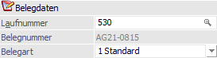
Ø Laufnummer
Die Funktion der Laufnummer ist das schnelle Übergeben eines Beleges von Stufe zu Stufe oder das Aufrufen / Editieren von bestehenden Belegen. Die Laufnummer ist dabei max. 20-stellig und alphanumerisch.
Solange die Laufnummer nicht bestätigt wurde, kann kein anderes Eingabefeld bearbeitet werden. Folgende Sondertasten stehen an dieser Stelle zur Verfügung:
ü F3 / SHIFT+F3
Durch Anwahl der
F3-Taste kann der letzte Beleg (Kontonummer - Laufnummer) übernommen werden,
wobei insgesamt die letzten 20 Belege zur Verfügung stehen (unabhängig vom ggfs.
zuvor erfassten Konto). Wird die Eingabe mit der Enter-Taste bestätigt, so wird
der Beleg in der entsprechenden Belegstufe sofort geladen. Mit der
Tastenkombination SHIFT+F3 kann die Reihenfolge umgekehrt werden.
ü F8
Mit Hilfe der Taste F8 wird
der letzte Beleg des zuvor erfassten Kontos in der jeweiligen Belegstufe direkt
geladen.
ü STRG+F8
Durch Nutzung der
Tastenkombination STRG+F8 wird die nächste freie Laufnummer des zuvor erfassten
Kontos eingetragen und ein neuer Beleg kann erfasst werden.
Folgendes ist bei der Vergabe der Laufnummern zu beachten:
Beispiel 1
Wird ein Angebot mit der Laufnummer 1 in einen Auftrag (oder einen Lieferschein bzw. Faktura) umgewandelt, so erhält dieser Auftrag (bzw. der Lieferschein / die Faktura) die Laufnummer 2. Hintergrund hierfür ist, dass der Angebotsbeleg (inkl. aller ursprünglich angegebenen Daten) IMMER erhalten bleibt!
Der Belegstatus (z.B. *MAA) wird dabei vom Angebot an den nachfolgenden Belegen weitergereicht. Somit würde z.B. der Auftrag mit *MAA starten und nach dem Druck den Status **AA erhalten. Das Angebot wird nach der Umwandlung als erledigt gekennzeichnet und erhält den Status ----.
Beispiel 2
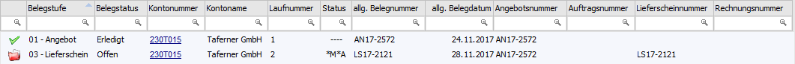
Die erste Zeile zeigt einen Angebotsbeleg mit der Laufnummer 1 (Angebotsnummer AN17-2572) der IMMER erhalten bleibt.
In der zweiten Zeile sehen wir das Angebot (AN17-2572), welches in einen Lieferschein (LS17-2121) umgewandelt wurde. Hier wird ersichtlich, dass die nächste freie Laufnummer (2) vergeben wurde.
Beispiel 3
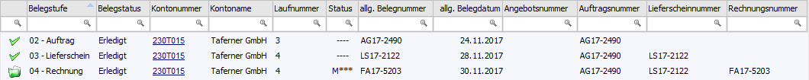
In der ersten Zeile steht ein Auftrag (AG17-2490) mit der Laufnummer 3, welcher bereits zu einer Faktura umgewandelt wurde und daher als erledigter Beleg gekennzeichnet ist. Nachfolgende wird in der zweiten Zeile der abgeschlossene Lieferschein (LS-17-2122) angezeigt.
In der dritten und letzten Zeile sieht man die Faktura, welche aus dem Auftrag (AG17-2490) erstellt wurde. Die Laufnummern für den Lieferschein und Faktura sind allerdings identisch. Dieses liegt daran, dass die beiden Belege "intern" der gleiche Beleg sind und nur optisch getrennt dargestellt werden.
Ø Belegnummer
An dieser Stelle wird die Belegnummer des Belegs angezeigt, wobei hierüber bereits der Status des Belegs erkennbar ist:
ü NEUER BELEG
Es wird ein neuer
Beleg erfasst.
ü Keine Belegnummer
Es wird ein
Beleg in eine neue Belegstufe gewandelt.
ü Belegnummer vorhanden (z.B.
AG21-0815)
Es wird ein bestehender Beleg editiert.
Ø Belegart
An dieser Stelle wird automatisch die Standard-Belegart des Interessenten / Kunden / Lieferanten vorgeschlagen und kann editiert werden. Hierbei stehen aber nur all jene Belegarten zur Verfügung, welche lt. Kunden- / Lieferantengruppe erlaubt sind und dem Belegtyp (Verkauf bzw. Einkauf) entsprechen.
Hinweis
Ist in der Belegart eine so genannte Kontenvorlage hinterlegt, so werden bestimmte Bereiche lt. dieser Vorlage herangezogen bzw. berücksichtigt!
Datum
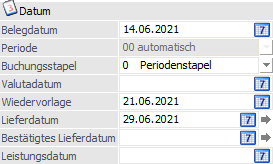
Ø Belegdatum
Hier kann das Belegdatum eingetragen werden, wobei das Tagesdatum automatisch vorgeschlagen wird. Ein schnelles Ändern des Datums ist mit den Tasten + und - möglich. Durch Drücken der Taste F3 kann das aktuelle Tagesdatum wieder gesetzt werden.
Ø Periode
An dieser Stelle kann die Periode des Belegs, unabhängig vom Rechnungsdatum, definiert werden (nur bei Belegstufe "4 - Faktura" und "8 - L.Faktura" möglich). Hierfür stehen folgende Auswahlmöglichkeiten zur Verfügung:
ü 00 - automatisch (Periode wird lt. Belegdatum ermittelt)
ü 01 - Januar
ü 02 - Februar
ü 03 - März
ü 04 - April
ü 05 - Mai
ü 06 - Juni
ü 07 - Juli
ü 08 - August
ü 09 - September
ü 10 - Oktober
ü 11 - November
ü 12 - Dezember
Sollte eine vom Datum abweichende Periode oder ein von der Periode abweichendes Datum eingegeben werden, dann wird darauf entsprechend hingewiesen.
Beispiel
Die Faktura soll mit Datum "15.06.2021" und Periode "05 - Mai" erfasst werden.
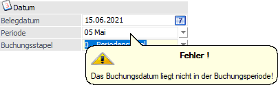
Die Periode kann auch bei bereits gedruckten Belegen nachträglich geändert werden. Bei einer abgeänderten Periode wird beim Druck die Periode sowohl in WinLine FAKT, als auch in WinLine FIBU korrigiert.
Achtung
Eine Einstellung ungleich "00 - automatisch" wirkt sich in WinLine Fakturierung direkt auf die zum Abspeichern verwendete Periode aus (z.B. beim Artikeljournal oder bei der Artikelperiodenliste). Dieses kann ggfs. ungleiche Auswertungen zur Folge haben (Auswertung mit 01.06.2021 bis 30.06.2021 zeigt andere Werte an als eine Selektion der Periode 06).
Des Weiteren wird dadurch die Buchungsperiode für die Übergabe an WinLine Finanzbuchhaltung (Periode für die Umsatzsteuervoranmeldung) beeinflusst.
Wird ein Beleg mit einer "abweichenden" Periode storniert, so bleibt diese abweichende Periode auch im Stornobeleg erhalten, wenn dieser mit der Option "Belegdatum" storniert wird. Wird für den Stornobeleg die Option "Tagesdatum" verwendet, so wird die zum Tagesdatum zugehörige Periode herangezogen.
Ø Buchungsstapel
Handelt es sich bei dem aktuellen Beleg um eine Rechnung (Belegstufe "4 - Faktura" bzw. "8 - L.Faktura"), so kann an dieser Stelle der Buchungsstapel für die WinLine FIBU angegeben werden, wobei die Standardvorgabe in der Belegart (Register "FIBU/KORE") definiert wird. Folgende Auswahlmöglichkeiten stehen zur Verfügung:
ü 0 - Periodenstapel
Diese
Auswahl steht immer zur Verfügung und bedeutet, dass aufgrund der Periode der
Buchungsstapel ermittelt wird (-1 bis -12).
ü xxx - xxx (Nummer -
Bezeichnung)
Es handelt sich um einen in der WinLine FIBU angelegten
Buchungsstapel, welcher als FAKT-Stapel definiert wurde.
Hinweis 1
Das Feld "Buchungsstapel" steht grundsätzlich nur zur Verfügung, wenn die Option "Abweichende Faktstapel verwenden" in den FAKT-Parameter (Belege - Erweiterte Optionen) aktiviert wurde und FAKT-Stapel im Programm "Buchungen speichern" (WinLine FIBU) angelegt wurden.
Hinweis 2
Das Feld "Stapelnummer" wird in Formeln (z.B. Belegkopfformeln) nicht unterstützt.
Ø Valutadatum
Wenn an dieser Stelle ein zum Rechnungsdatum abweichendes Datum eingetragen wird, dann wird dieses Datum als OP-Datum und für die Berechnung der Fälligkeiten (Skonto / Netto) in der WinLine FIBU und WinLine FAKT verwendet. Des Weiteren werden die Fälligkeitsdaten im Register "Zusatz" des Belegs auch entsprechend belegt.
Hinweis
Ist in den FIBU-Parametern die Einstellung "Eingabe von Fälligkeits- und Skontodatum anstelle der Netto- und Skontotage" aktiviert, so stehen die Felder…
ü Fälligkeitsdatum anstelle der Nettotage
ü Skontodatum1 anstelle der Skontotage1
ü Skontodatum2 anstelle der Skontotage2
… zur Verfügung.
Ø Wiedervorlage
An dieser Stelle kann ein Wiedervorlagedatum eingegeben werden. Wurde eine "Spanne für Wiedervorlage" (WinLine Start - Parameter - Applikations-Parameter - FAKT-Parameter - Belege - Allgemein) hinterlegt (z.B. 7 Tage), so wird das Wiedervorlagedatum automatisch vorbesetzt. Dabei wird das Bearbeitungsdatum plus den Wiedervorlagetagen gerechnet. Dieses Datum dient in weiterer Folge für die Wiedervorlage (nähere Informationen entnehmen Sie bitte dem WinLine FAKT-Handbuch, Kapitel Angebotswiedervorlage).
Ø Lieferdatum
Das hier eingegebene Lieferdatum gilt als Standardwert für alle Belegzeilen. Sollte das Lieferdatum für einzelne Artikel abweichen, kann das Lieferdatum in der Detailinfo der Artikelzeile übersteuert werden.
Wird ein bereits bearbeiteter und einmal gespeicherter Beleg bearbeitet, so kann durch Anklicken des Buttons das in dieses Feld eingegebene Lieferdatum auf alle bestehenden Erfassungszeilen kopiert werden.
Diese Eingabe stellt nur einen Vorschlag für das Lieferdatum in den Einzelzeilen dar. Dieses Datum wird nicht im Belegkopf gespeichert und kann daher auch nicht im Belegkopf angedruckt werden.
Ø Bestätigtes Lieferdatum
Das hier eingegebene bestätigte Lieferdatum gilt als Standardwert für alle Belegzeilen. Sollte das bestätigte Lieferdatum für einzelne Artikel abweichen, kann das bestätigte Lieferdatum in der Detailinfo der Artikelzeile übersteuert werden.
Wird ein bereits bearbeiteter und einmal gespeicherter Beleg bearbeitet, so kann durch Anklicken des Buttons das in dieses Feld eingegebene bestätigte Lieferdatum auf alle bestehenden Erfassungszeilen kopiert werden.
Diese Eingabe stellt nur einen Vorschlag für das bestätigte Lieferdatum in den Einzelzeilen dar. Dieses Datum wird nicht im Belegkopf gespeichert und kann daher auch nicht im Belegkopf angedruckt werden.
Hinweis
Die Bezeichnungen der Felder "Lieferdatum" und "Bestätigtes Lieferdatum" können über die Belegoptionen (WinLine FAKT - Stammdaten - Belegstammdaten - Belegoption - Register "Bezeichnungen") individuell abgeändert werden, wobei diese Feldnamen dann sowohl im Belegkopf, als auch im Belegmittelteil entsprechend angezeigt werden.
Ø Leistungsdatum
An dieser Stelle kann das Leistungsdatum für die WinLine FIBU-Übergabe hinterlegt werden. Grundvoraussetzung hierfür ist, dass in der FIBU-Parametern (Bereich "Buchen") ein Abgrenzungskonto hinterlegt wurde.
Zuordnungen
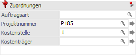
Ø Auftragsart
Die Auftragsart kann aus den hinterlegten Auftragsarten gewählt oder spezifisch pro Beleg eingegeben und in der Statistik bzw. der Vertreterabrechnung ausgewertet werden.
Ø Projektnummer
In diesem Feld kann die Projektnummer eingegeben werden, mit welcher Belege zusammengefasst werden können (Vorgangsnummer). Zur Suche nach einer bereits bestehenden Projektnummer steht der Matchcode zur Verfügung.
Wird an dieser Stelle keine Nummer angegeben, so wird beim ersten Druck eines Beleges (d.h. ein Beleg, der zum ersten Mal in einer Belegstufe erfasst wird) die Projektnummer aus der Belegart herangezogen.
Hinweis
Ob durch die automatische Nummernvergabe auch ein Projekt im Projektestamm angelegt werden soll, kann in der Belegart (Register "Stamm", Feld "Projektnummer") per Option ("0 - als Projekt speichern" oder "1 - nicht als Projekt speichern") definiert werden.
Achtung
Die generelle Vergabe einer Nummer im Feld "Projektnummer" kann nicht unterbunden werden!
Beispiele
ü Projektnummer lt. Belegart = 70
mit Option "0 - als Projekt speichern"
Im Belegerfassen wird ein Angebot
erfasst und als Projektnummer 4711 manuell eingetragen. Der Beleg erhält die
Projektnummer 4711, wobei jedoch kein "Projekt" im Projektestamm automatisch
angelegt wird!
Diese Nummer dient nur dazu, verschiedene Belege unter einer
Nummer (Vorgangsnummer) zusammenfassen.
ü Projektnummer lt. Belegart = 70
mit Option "0 - als Projekt speichern"
Im Belegerfassen wird ein Angebot
erfasst und keine Projektnummer vergeben. Der Beleg erhält automatisch die
nächste Projektnummer (hier Nr. 71). Aufgrund der Option "0 - als Projekt
speichern" wird diese Nummer 71 als "Kundenprojekt" im Projektestamm
angelegt.
ü Projektnummer lt. Belegart = 70
mit Option "1 - nicht als Projekt speichern"
Im Belegerfassen wird ein
Angebot erfasst und keine Projektnummer vergeben. Der Beleg erhält automatisch
die nächste Projektnummer (hier Nr. 71). Aufgrund der Option "1 - nicht als
Projekt speichern" wird kein "Kundenprojekt" im Projektestamm angelegt.
Ø Kostenstelle
An dieser Stelle kann die Kostenstelle hinterlegt werden, wenn der Beleg in die WinLine KORE übergeben werden soll. Je nach Belegart, kann die Kostenstelle in den Belegzeilen noch verändert werden. Wird ein bereits bearbeiteter und einmal gespeicherter Beleg bearbeitet, so kann durch Anklicken des Buttons die in diesem Feld eingegebene Kostenstelle auf alle bestehenden Erfassungszeilen kopiert werden.
Ø Kostenträger
Hier kann der Kostenträger hinterlegt werden, wenn der Beleg in die WinLine KORE übergeben werden soll. Je nach Belegart, kann der Kostenträger in den Belegzeilen noch verändert werden. Wird ein bereits bearbeiteter und einmal gespeicherter Beleg bearbeitet, so kann durch Anklicken des Buttons der in dieses Feld eingegebene Kostenträger auf alle bestehenden Erfassungszeilen kopiert werden.
Ø Auftragsreferenz
In diesem Feld kann die Auftragsreferenz bzw. Bestellnummer des Käufers eingegeben werden.
Hinweis
Dies ist u. a. eine Pflichtangabe bei der Übermittlung von E-Rechnungen an den Bund bzw. an die Bundesbeschaffung GmbH im EBInvoice-Format (Exporttypen "12 - EBInvoice (E-Rechnung an den Bund)" und "13 - EBInvoice (E-Rechnung an BBG)").
Ø Lief.rechnungsnummer
An dieser Stelle kann für Einkaufsbelege die Rechnungsnummer laut Lieferantenbeleg hinterlegt werden und wird zusätzlich zur normalen Belegnummer im Beleg geführt. Somit ist weiterhin ein lückenloser Nummernkreis der Einkaufsbelege gewährleistet.
Hinweis
Die Lieferantenrechnungsnummer wird nach dem Druck der Lieferantenfaktura als OP-Nummer in die WinLine Finanzbuchhaltung übergeben. Als Belegnummer wird weiterhin die normale Belegnummer laut Belegnummernkreis der Belegart verwendet.
Beleginformationen
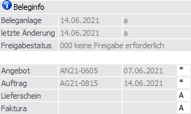
Ø Beleganlage
Es werden das Datum und der Benutzer angezeigt, wann bzw. durch wen der Beleg erfasst wurde.
Ø Letzte Änderung
Es werden das Datum und der Benutzer angezeigt, wann bzw. durch wen der Beleg zuletzt geändert wurde.
Ø Freigabestatus
Hier wird der Freigabestatus des aktuellen Belegs angezeigt, dieser kann durch Anklicken des "Freigabe"-Buttons verändert werden.
Ø Belegnummer
Die Belegnummer wird beim Rechnen oder Drucken des Belegs automatisch (aufgrund des Belegnummernkreises der Belegart) vergeben, wobei vor dem Rechnen / Drucken in die Belegnummernfolge manuelle eingegriffen werden kann (wenn gemäß Belegart erlaubt).
Soll die Belegnummer bereits im Belegkopf definiert werden, dann muss in dem Feld "Datum" ein * eingegeben werden. Dadurch wird man direkt in das Belegnummernfeld der jeweiligen Belegstufe geführt und kann die Eingabe tätigen.
Bei Eingabe dieser Belegnummer wird geprüft, ob diese bereits im System (für dieses Konto) vorhanden ist. Ist dies der Fall, so wird ein entsprechender Hinweis ausgegeben.
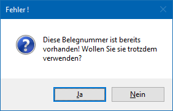
Hinweis 1
Bei bereits gedruckten Belegen kann die Belegnummer nicht mehr verändert werden.
Hinweis 2
Bei Belegen, welche die Option "13 - EBInvoice (E-Rechnung an BBG)" - entweder über das Personenkonto oder über die verwendete Belegart - zugewiesen haben, können die Felder "Auftragsnummer" und "Auftragsdatum" manuell bearbeitet werden. Dies dient dazu, um bei E-Rechnungen an die Bundesbeschaffung GmbH eine so genannte "e-Shop-Bestellnummer" bzw. ein Bestelldatum angeben zu können. Wurde ein Beleg als Auftrag gedruckt, können diese Informationen nachträglich nicht mehr geändert werden.
Ø Abarbeitungscode
An dieser Stelle wird jeder Beleg durch einen 4-stelligen Abarbeitungscode (Status) gekennzeichnet, welcher Auskunft über die Bearbeitungsvorgehensweise gibt. Die 4 Stellen beziehen sich dabei auf die 4 Belegstufen (Verkauf: Angebot, Auftrag, Lieferschein, Faktura / Einkauf: L.Anfrage, L.Bestellung, L.Lieferschein, L.Faktura). Folgende Codes (Stati) sind möglich:
ü A
Der Beleg wird automatisch im
Belegdruck zum Ausdruck vorgeschlagen, wenn die Vorstufe bearbeitet (= gedruckt)
wurde.
ü D
Der Beleg wurde bereits
gerechnet (wird automatisch vom Programm vergeben).
ü M
Der Beleg wird manuell
erfasst.
ü N
Der Beleg soll in dieser
Belegstufe nicht bearbeitet werden.
Hinweis
Wenn Belege importiert werden, dann müssen die nicht genutzten / übersprungenen Belegstufen immer mit N gekennzeichnet werden. Dadurch wird dem Programm mitgeteilt in welcher Belegstufe der importierte Beleg bearbeitet werden soll.
Beispiel
Rechnungen werden direkt in WinLine importiert und sollen über den Belegdruck ausgegeben werden. In diesem Fall muss der Belegstatus "NNNA" lauten.
ü B
Der Druckstatus B bedeutet,
dass beim Kopieren des Beleges im Autobeleg das erste B durch den Druckstatus A
(für automatischen Belegdruck) ersetzt wird. Die Vorstufen erhalten den
Druckstatus N (für nicht bearbeiten) und die Folgestufen den Druckstatus aus der
Belegart.
Hinweis
Belege mit dem Status B können weder gerechnet noch gedruckt werden.
Beispiele
Belegart mit Code MMAS - Ursprungsbeleg mit Status MMBS à Neuer Beleg mit Status NNAS
Belegart mit Code MMAA - Ursprungsbeleg mit Status BMAA à Neuer Beleg mit Status AMAA
ü S
Es soll ein
Sammellieferschein oder eine Sammelfaktura erzeugt werden.
Hinweis
Dieser Status ist nur für bei den Belegstufen "Lieferschein" und "Faktura" hinterlegbar.
ü *
Der Beleg wurde bereits
gedruckt (wird automatisch vom Programm vergeben).
ü L
Der Beleg wurde gelöscht
(wird automatisch vom Programm vergeben).
Hinweis
Bei einem gelöschten Beleg wird in allen 4 Belegstufen ein L dargestellt, d.h. der Belegstatus lautet "LLLL".
ü -
Wenn ein Beleg in allen vier
Belegstufen ein - aufweist, bedeutet dieses, dass der Beleg komplett erledigt
ist, d.h.
ü Ein Angebot wurde in einen Auftrag umgewandelt (Angebot erhält den Status "----")
ü Ein Auftrag wurde durch Lieferscheinerstellung bereits vollständig ausgeliefert (Auftrag erhält den Status "----")
ü Ein Lieferschein wurde in eine Faktura bzw. Sammelfaktura umgewandelt (Lieferschein erhält den Status "----")
Hinweis
Nur solange die erledigten Belege im System erhalten bleiben, sind spezielle Rückverfolgungsauswertungen (z.B. Auftragsverfolgung) möglich.
ü K
Bei dem Beleg handelt es sich
um einen Kontrakt, welcher über den Programmbereich "Kontrakte erfassen"
erstellt wurde (wird automatisch vom Programm vergeben).
Hinweis
Bei einem Kontrakt wird in allen 4 Belegstufen ein K dargestellt, d.h. der Belegstatus lautet "KKKK".
Beispiel
Der Beleg "AG21-2490" weist den Status N*MA auf:
ü Der Beleg "AG21-2490" wurde in der Belegstufe Angebot nicht bearbeitet (N)
ü Der Auftrag wurde gedruckt (*)
ü Die Belegstufe Lieferschein muss manuell bearbeitet werden (M)
ü Sobald der Lieferschein gedruckt wurde, wird die Faktura automatisch im Belegdruck zum Ausdruck vorgeschlagen (A)
Hinweis
Wenn in einer Belegstufe ein D oder ein * eingetragen ist, wurde dieser Beleg bereits gerechnet. Dieser Beleg kann jedoch in der jeweiligen Belegstufe nochmals aufgerufen und editiert werden, solange er noch nicht in der nächsten Belegstufe bearbeitet wurde. D.h. ein Lieferschein, der schon in der Stufe Faktura bearbeitet wurde, kann nicht mehr editiert werden.
Fakturen können wiederum nur so lange editiert werden, bis sie in der Finanzbuchhaltung verbucht wurden und der Bezug der Buchungszeile zur Faktura gegeben ist. D.h. wird z.B. ein Nummernkreis im Buchen verwendet und dieser verändert die Belegnummer - sprich diese ist nicht mehr mit der Belegnummer der WinLine FAKT stimmig, dann kann der Beleg ebenfalls nicht mehr bearbeitet werden!
Allgemeine Informationen
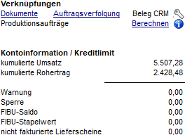
In diesen Feldern werden allgemeine Informationen zum Beleg und dem aufgerufenen Kunden / Lieferanten angezeigt. Diese Informationen können per Formulargestaltung frei definiert werden.
Ø Dokumente
In das "Belegerfassen - Hauptfenster" kann ein externes Dokument mittels Drag & Drop fallen gelassen und somit archiviert werden. Dadurch wird der Text "Dokumente" angezeigt, welcher gleichzeitig ein Link auf das Archiv darstellt. D.h. durch Anklicken des Links wird die Archivvorschau geöffnet.
Wenn der Beleg das erste Mal nach dem Einfügen des Dokuments gedruckt wird, wird auch der Ausdruck der aktuellen Belegstufe mit archiviert. Ob ein Dokument nur in der jeweiligen Belegstufe, in welcher es eingefügt wurden, im Belegerfassen angezeigt wird, kann per Belegart (Register "Ausdruck" - Option "In allen Stufen druckbar") entschieden werden.
Hinweis
Wenn eine WinLine ARCHIV-Lizenz vorliegt, dann wird bei dem Drag & Drop eines Dokumentes automatisch der Programmbereich "Archiv - Schlagwörter" geöffnet (Option "Schlagwortfenster nach Drag und Drop öffnen" im "WinLine ADMIN - Archiv - Archiv Parameter" muss hierfür aktiviert sein).
Ø Auftragsverfolgung
Im "Belege erfassen" wird beim Editieren bestehender Aufträge im Infobereich ein Hyperlink "Auftragsverfolgung" angezeigt. Beim Klick auf diesen Link wird Auswertung "Auftragsverfolgung" für den aktuellen Auftrag aufgerufen. In dieser Auswertung werden die zum Auftrag gehörige Lieferantenbestellungen, sowie bereits angelegte Produktionsaufträge (und deren Lieferantenbestellungen) angezeigt.
Ø Beleg CRM
Wenn zu dem Beleg ein CRM-Fall erfasst wurde, dann wird auf dieses durch den Text "Beleg CRM" hingewiesen. Durch Anwahl des "Schraubenschlüssel"-Buttons wird die CRM Fallansicht geöffnet (wenn es nur eine CRM Aktion bzw. einen CRM Workflow mit einem Schritt gibt) oder das Fenster "Belege - CRM-Ansicht".
Ø Produktionsaufträge
Ist in einem Beleg ein Produktionsartikel mit der Option "auftragsbezogene Produktion/Bestellung" vorhanden, so wird bei dem ersten Öffnen des Beleges der Text "Berechnen" angezeigt. Sobald dieser Text angewählt wird, so wird der Erfüllungsprozentsatz berechnet und entsprechend angezeigt.
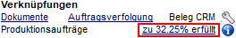
Hinweis
Durch Anwählen des "Info"-Buttons wird die Kundeninfo aus der WinLine PPS angezeigt.
Ø Auftragsbezogener Beleg
Handelt es sich um einen Beleg mit Verknüpfung zu einem Kundenauftrag, so wird dieses mit DrillDowns angezeigt.
Beispiel
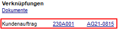
Ø kum. Umsatz
Darstellung des kumulierten Umsatzes vom aktiven Personenkonto.
Ø kum. Rohertrag
Darstellung des kumulierten Rohertrags vom aktiven Personenkonto.
Ø Kreditlimit
Hier werden detaillierte Informationen über das Kreditlimit des Kunden bzw. Lieferanten angezeigt:
ü Warnung
Anzeige der
Warnbetrages. Dieser Betrag kann im Personenkontenstamm (Register "FIBU")
eingegeben werden.
ü Sperre
Anzeige des
Sperrbetrages. Dieser Betrag kann im Personenkontenstamm (Register "FIBU")
eingegeben werden.
ü FIBU-Saldo
Hier wird der
aktuelle FIBU-Saldo des Personenkontos angezeigt.
ü Stapelwert
An dieser Stelle
wird die Summe aller Buchungen für dieses Personenkonto angezeigt, die noch auf
einem Stapel liegen aber noch nicht verbucht wurden. Grundvoraussetzung hierfür
ist eine in der Belegart aktivierte Kreditlimitprüfung (mit hinterlegten Werten
im Kontenstamm).
ü nicht fakturierte LS
Hier wird
die Summe aller noch nicht fakturierten Lieferscheine des Kontos angezeigt.
Grundvoraussetzung hierfür ist eine in der Belegart aktivierte
Kreditlimitprüfung (mit hinterlegten Werten im Kontenstamm).
Sonderbuttons - Register "Kopf"
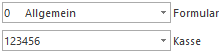
Folgender Button stehen nur im Register "Kopf" zur Verfügung (die Beschreibung der weiteren Buttons können dem Kapitel Belegerfassen entnommen werden):
Ø Formular
Über die Auswahlbox "Formular" kann gewählt werden, in welcher Form die Belegerfassung stattfinden soll. Wenn die Option "0 - Allgemein" gewählt wird, dann wird wieder in die "Normalansicht" mit allen Eingabefeldern zurückgeschaltet.
Hinweis
Die Definition der Formulare für die individuelle Gestaltung erfolgt im Programm WinLine START über den Menüpunkt "Vorlagen - Vorlagen Anlage - Individuelle Formulare".
Achtung
Es werden nur die individuellen Belegvorlagen angezeigt, bei welchen die Option "Belegmitte als Tabelle" aktiviert wurde.
Ø Kasse
Aus der Auswahlliste kann, sofern in den Kassenstammdaten mehrere Kassen angelegt wurden, eine definierte Kassenidentifikationsnummer gewählt werden. Hierüber kann dann gesteuert werden, in welchem DEP (Datenerfassungsprotokoll) der Beleg erscheinen soll.
Hinweis
Die zuletzt gewählte Kassenidentifikationsnummer wird benutzerspezifisch gespeichert.